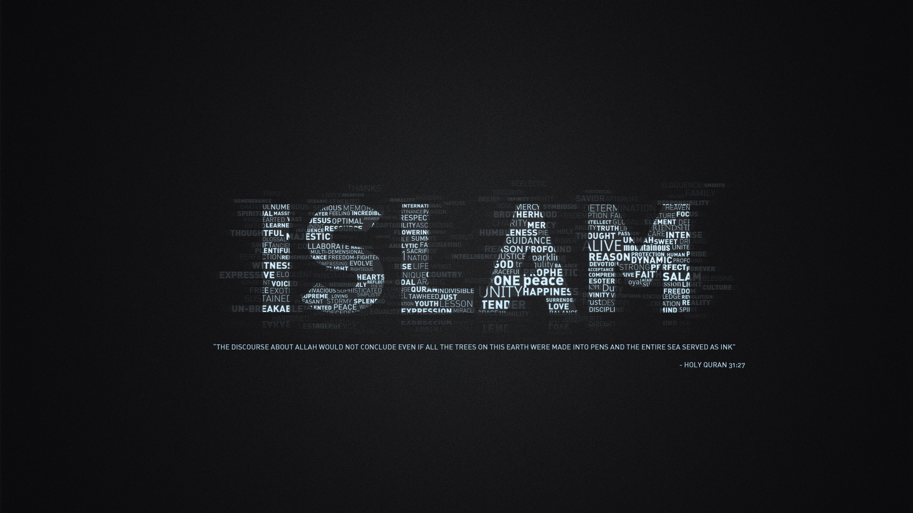

Selamat Datang di website Kami :D semoga menyenangan dan bermanfaat.
Tujuan hidup manusia adalah sebgai mana yang diperintahkan Allah bawasanya masnusia itu diciptakan sebgai kholifah Fil'ard bukan hanya sekedar memipin manusia tetapi memimpin semua yang ada di dunia karna Fil'ard bukan Fil'nars
Banyak orang pada zaman Drak age bahwa bumi itu datar dan orang yang bernama galaleo galalei menyebutkan bahwa bumi itu bulat tetapi karna dahulu itu zaman drak age maka dia pun di bunuh karna menyimpulkan bahwa bumi itu bulat
Cobaam hidup seperti KOPI, memang pahit tetapi setiap orang memiliki cara untuk menikmati KOPI tersebut Begitu juga dengan ujian hidup memang pahit bukan masalah jika kita tau cara menikmatinya
Ilmu adalah salah satu pengetahuan unutk kita dapat bertahan dalam menghadapi cobaan hidup karna dengan ilmu kita dapat menyelesaikan sebuah permasalahan oleh karena itu kita harus mencari ilmu dan jangan lupa mengamalkanya karna jika tidak ilmu seperti pohon yang tidak menghasikan buah
Ilmu adalah salah satu pengetahuan unutk kita dapat bertahan dalam menghadapi cobaan hidup karna dengan ilmu kita dapat menyelesaikan sebuah permasalahan oleh karena itu kita harus mencari ilmu dan jangan lupa mengamalkanya karna jika tidak ilmu seperti pohon yang tidak menghasikan buah
Ilmu adalah salah satu pengetahuan unutk kita dapat bertahan dalam menghadapi cobaan hidup karna dengan ilmu kita dapat menyelesaikan sebuah permasalahan oleh karena itu kita harus mencari ilmu dan jangan lupa mengamalkanya karna jika tidak ilmu seperti pohon yang tidak menghasikan buah
M2 (musahabah in the morning) adalah penyemangat kita sebelum kita memulai beljar mengajar di kelas agar kita dapat memotivasi diri dengan materi yang sangat menarik dan tentunya tidak membosankan melainka disana kita fun dan tentunya fun bil hikmah
3GM (Give Gold Generation of Moeslim) adalah kajian diamana kita mengkaji ayat atau disana pun kita membahas materi yang luar biasa hikmahnya dan biasanya kita itu dilakuakn seminggu 1 kali dan disana kita akan tau apa sih masalah remaja sekarang?
Rihlah adalah sebuah kegiatan di luar sekoalah tapi kita itu beljar dari alam (berekreasi) tetapi selain refresing di sana juga ada game yang tentunya semakin membuat kita senang dan di balik game itu ada hikmahnya lohhhh...
Date: